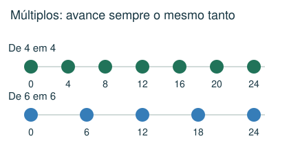
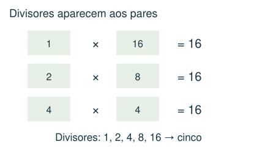
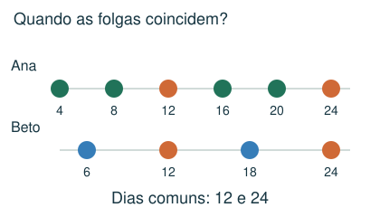
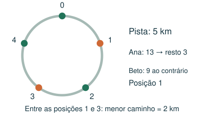

1 Intermediário
Qual dos valores não pode ser a soma de dois números de dois algarismos não nulos que tenham os algarismos em ordem invertida?
- A) 154
- B) 125
- C) 66
- D) 99
Meu raciocínio
CAPÍTULO 06 · MATEMÁTICA · 6º ANO
Reconhecer repetições, múltiplos e encontros periódicos.
1. Observe → 2. Entenda → 3. Resolva → 4. Confira
OBSERVE E COMPREENDA · 1

Múltiplos de 5: 0, 5, 10, 15... Divisores de 12: 1, 2, 3, 4, 6 e 12. Divisibilidade por 2: unidade par; por 3: soma dos algarismos divisível por 3; por 5: termina em 0 ou 5; por 9: soma divisível por 9; por 10: termina em 0. Por 11, a diferença entre somas de posições alternadas é múltipla de 11, incluindo zero.
Um número de dois algarismos AB vale 10A + B, não A × B. AB + BA = 11 × (A + B); logo é múltiplo de 11. Quadrados perfeitos como 1, 4, 9 e 16 têm uma quantidade ímpar de divisores, pois um dos pares de fatores é formado por números iguais.
O mínimo múltiplo comum é o menor múltiplo positivo comum. Ciclos de 4 e 6 dias que começam juntos se reencontram a cada 12 dias. Se começam em datas diferentes, liste os primeiros eventos de cada sequência até achar um encontro; o MMC dá o intervalo entre encontros, não necessariamente a data do primeiro.
OBSERVE E COMPREENDA · 2

Na divisão 17 = 3 × 5 + 2, o resto 2 representa o avanço depois de 3 voltas de comprimento 5. Para sentidos contrários, marque os pontos numa mesma orientação. A distância menor entre posições numa pista de comprimento L é o menor valor entre d e L − d.
Em itinerários, siga uma cidade até voltar a ela, determine o tamanho de cada ciclo e calcule o MMC. Em alternância ligado/desligado, conte quantas vezes cada posição muda. Em uma roda que elimina a cada segunda pessoa, simule casos pequenos: com início da contagem em 1, potências de 2 deixam o primeiro como sobrevivente. Não use essa regra se a contagem for diferente.
VAMOS RESOLVER JUNTOS · 1
Ana folga nos dias 4, 8, 12...; Beto nos dias 6, 12, 18... Qual a segunda folga comum?

A primeira é 12; o intervalo é MMC(4,6) = 12. A segunda é 24.
VAMOS RESOLVER JUNTOS · 2
Numa pista de 5 km, Ana anda 13 km no sentido horário e Beto 9 km no sentido contrário, saindo do mesmo ponto.

Ana termina na posição 3. Beto avança 4 no sentido contrário, isto é, posição 1 na orientação de Ana. As distâncias possíveis são 2 e 3 km; a menor é 2 km.
AGORA É COM VOCÊ
Registre suas contas no caderno ou imprima esta página. Explique como chegou à resposta.
Qual dos valores não pode ser a soma de dois números de dois algarismos não nulos que tenham os algarismos em ordem invertida?
Duas luzes piscam a cada 6 e 8 segundos. Elas piscaram juntas agora. Em quantos segundos piscarão juntas novamente?
Numa pista circular de 5 km, Ana corre 13 km no sentido horário e Beto 9 km no sentido contrário, saindo do mesmo ponto. Qual a menor distância entre eles ao longo da pista?
Números de 1 a 16 começam apagados. Para cada k de 1 a 16, todos os múltiplos de k trocam de estado: apagado vira aceso e aceso vira apagado. Quais terminam acesos?
Ana folga nos dias 4, 9, 14, 19... Beto folga nos dias 6, 12, 18, 24... A primeira folga comum é no dia 24. Qual é o dia da segunda folga comum, contando os dias continuamente?
CONFERIR TAMBÉM É APRENDER
Abra cada resposta depois de tentar resolver.
B) 125. AB + BA = 11 × (A + B). 125 não é múltiplo de 11. Os outros são possíveis: 15+51, 18+81 e 59+95.
A) 24. O primeiro múltiplo positivo comum de 6 e 8 é 24.
D) 2 km. Ana termina na posição 3 km. Beto anda 4 km no sentido contrário após uma volta, terminando na posição 1 km na orientação de Ana. Os caminhos entre eles medem 2 e 3 km.
C) 1, 4, 9 e 16. Cada número muda uma vez por divisor. Só os quadrados perfeitos têm quantidade ímpar de divisores.
B) 54. Os ciclos têm 5 e 6 dias. Entre encontros há MMC(5,6)=30 dias. A segunda coincidência ocorre em 24 + 30 = 54.
Estas questões originais trabalham o tópico. Os recortes incluem resoluções publicadas.